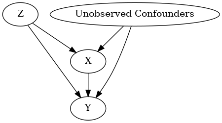

Different ways to load an input graph¶
We recommend using the GML graph format to load a graph. You can also use the DOT format, which requires additional dependencies (either pydot or pygraphviz).
DoWhy supports both loading a graph as a string, or as a file (with the extensions ‘gml’ or ‘dot’).
Below is an example showing the different ways of loading the same graph.
[1]:
import os, sys
import random
sys.path.append(os.path.abspath("../../../"))
[2]:
import numpy as np
import pandas as pd
import dowhy
from dowhy import CausalModel
from IPython.display import Image, display
I. Generating dummy data¶
We generate some dummy data for three variables: X, Y and Z.
[3]:
z=[i for i in range(10)]
random.shuffle(z)
df = pd.DataFrame(data = {'Z': z, 'X': range(0,10), 'Y': range(0,100,10)})
df
[3]:
| Z | X | Y | |
|---|---|---|---|
| 0 | 0 | 0 | 0 |
| 1 | 7 | 1 | 10 |
| 2 | 8 | 2 | 20 |
| 3 | 6 | 3 | 30 |
| 4 | 5 | 4 | 40 |
| 5 | 3 | 5 | 50 |
| 6 | 9 | 6 | 60 |
| 7 | 2 | 7 | 70 |
| 8 | 1 | 8 | 80 |
| 9 | 4 | 9 | 90 |
II. Loading GML or DOT graphs¶
GML format¶
[4]:
# With GML string
model=CausalModel(
data = df,
treatment='X',
outcome='Y',
graph="""graph[directed 1 node[id "Z" label "Z"]
node[id "X" label "X"]
node[id "Y" label "Y"]
edge[source "Z" target "X"]
edge[source "Z" target "Y"]
edge[source "X" target "Y"]]"""
)
model.view_model()
display(Image(filename="causal_model.png"))
INFO:dowhy.causal_graph:If this is observed data (not from a randomized experiment), there might always be missing confounders. Adding a node named "Unobserved Confounders" to reflect this.
INFO:dowhy.causal_model:Model to find the causal effect of treatment ['X'] on outcome ['Y']

[5]:
# With GML file
model=CausalModel(
data = df,
treatment='X',
outcome='Y',
graph="../example_graphs/simple_graph_example.gml"
)
model.view_model()
display(Image(filename="causal_model.png"))
INFO:dowhy.causal_graph:If this is observed data (not from a randomized experiment), there might always be missing confounders. Adding a node named "Unobserved Confounders" to reflect this.
INFO:dowhy.causal_model:Model to find the causal effect of treatment ['X'] on outcome ['Y']

DOT format¶
[6]:
# With DOT string
model=CausalModel(
data = df,
treatment='X',
outcome='Y',
graph="digraph {Z -> X;Z -> Y;X -> Y;}"
)
model.view_model()
from IPython.display import Image, display
display(Image(filename="causal_model.png"))
INFO:dowhy.causal_graph:If this is observed data (not from a randomized experiment), there might always be missing confounders. Adding a node named "Unobserved Confounders" to reflect this.
INFO:dowhy.causal_model:Model to find the causal effect of treatment ['X'] on outcome ['Y']

[7]:
# With DOT file
model=CausalModel(
data = df,
treatment='X',
outcome='Y',
graph="../example_graphs/simple_graph_example.dot"
)
model.view_model()
display(Image(filename="causal_model.png"))
INFO:dowhy.causal_graph:If this is observed data (not from a randomized experiment), there might always be missing confounders. Adding a node named "Unobserved Confounders" to reflect this.
INFO:dowhy.causal_model:Model to find the causal effect of treatment ['X'] on outcome ['Y']